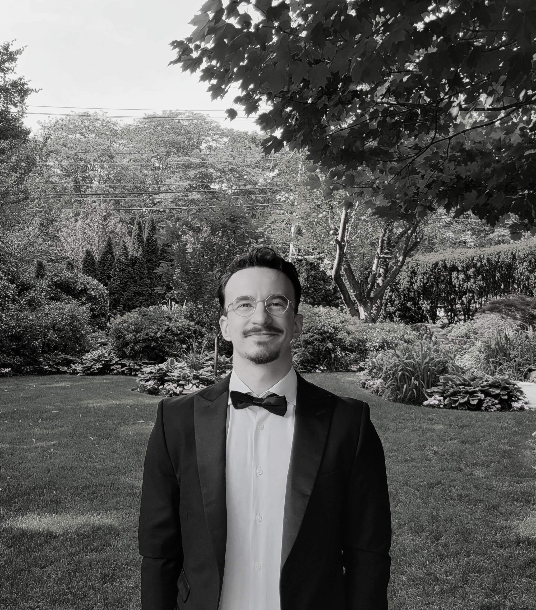

Eno Agolli
Assistant Director, Saul Kripke Center Postdoctoral Research Associate, CUNY Graduate Center
agollieno [at] gmail [dot] com
› about
About
I have a PhD in Philosophy from Rutgers University. I have done coursework and research in philosophy at UChicago, Cambridge (UK), UConn, and Notre Dame. I am an analytic philosopher, specializing in language and logic but also highly interested in metaphysics, epistemology, and occasionally even beyond.
I was born in Albania, raised in Greece, and I now live in New York City.
› picture of Eno
Picture of Eno

› research
Research
There are two ways in. Type for non-specialists or for specialists below.
› for non-specialists
I care about what it means to mean. Sometimes I think of myself as a chemist, but for language. Just as a chemist wants to know the laws by which molecules come together, and don't, I want to know the laws by which meanings come together, and don't. Consider this sentence:
Eno was in Bali in September of 2026.
You have almost certainly never encountered that sentence before. Yet you almost certainly understood it immediately. Somehow, you're able to take your knowledge of the meanings of its parts, together with your knowledge of how those parts are put together, and arrive at, indeed construct, a meaning for the whole.
But what exactly are the laws governing that process? For not all meanings can be put together. Consider:
More people have been to Bali than I have.
Someone has ever been to Bali.
Grammatically, these looks fine. But somehow, the meanings of the individual words and phrases fail to stick together into a meaningful sentence; they resist being assembled into a coherent whole.
My work asks what governs successes and failures of this kind, especially when it comes to expressions of possibility and necessity—words such as must and if—and reports of other people's thoughts, like "John believes that ...". I want to know what they contribute to the sentences that contain them, and what principles constrain the ways those meanings combine.
› for specialists
For those in the know: my main research is in formal semantics, with forrays into syntax, pragmatics, and logic. I work especially on intensional expressions—epistemic modals, propositional attitude reports, grammatical mood, conditionals, and tense—and on their interaction with reference and quantification. A central strand of my work concerns binding into intensional contexts. I develop a two-dimensional approach on which natural-language variables can range over two-dimensional semantic objects. I extend this to singular terms, tense, and modality.
In the course of this main research, I have produced four
offshoot lines:
(i) Conditionals: I have developed a referential theory of
conditionals, treating conditional antecedents as plural Russellian
definite descriptions of possible worlds. Among other things, this
gives rise to an unusual and, I think, philosophically interesting
logic of conditionals.
(ii) Retraction: Dynamic semantics has a lot to say about epistmeic
modals, but surprisingly little about retracting assertions that
contain them. I propose a new theory of how dynamic semantics can
handle such assertions.
(iii) Linguistic Akrasia: There has always been talk of the
normativity of meaning. So, if meaning is normative, there must be
linguistic mistakes. And if there can be linguistic mistakes, then
there can be such mistakes committed in the knowledge of the fact
that they are mistakes. I wonder if this constitutes a distinct case
of semantic or pragmatic akrasia.
(iv) Akrasia in AI models: relatedly, I wonder if AI agents are
genuinely capable of morally and epsitemically akratic behavior. If
they are, as they seem to, my work asks how such akratic behavior can
be both tamed and leveraged in the service of alignment.
My work also sometimes veers into neighboring areas of philosophy, especially metaphysics. I also have a longstanding interest in non-classical logic, particularly relevance and connexive logics. Sometimes, I also dabble in Wittgenstein (especially his theory of nonsense).
› poetry
Poetry
I have another life in language. I have published two books of poetry in Greek: Ποιητικό Αίτιο (Poetic Cause), published in 2015 and awarded the Varveris Prize in 2016, and Παράξενα Φρούτα που Κρέμονται (Strange Fruit Hanging), published in 2023. A third book is in the making.
Type read a poem, my books, or poet profile below.
› read a poem
Type another poem for another.
› my books
Ποιητικό Αίτιο (Poetic Cause) appeared in Greece in 2015 and received the Varveris Prize the following year.
My second collection, Παράξενα Φρούτα που Κρέμονται (Strange Fruit Hanging), was published by Enypnio in 2023.
› analytic salon
Analytic Philosophy Salon
I also run The Analytic Salon , a public-facing discussion series in New York built around a simple idea: analytic philosophy can be rigorous without being cloistered. Each session begins with a problem worth getting stuck on, usually introduced by an invited philosopher, and then opens into structured conversation with the room. We have discussed topics ranging from decision theory to metaphysics, with an emphasis on clarity, disagreement, and the pleasure of thinking together.
› misc
Misc.
I (mostly) exist outside of academia too.
I love languages, human and otherwise. I speak Albanian, English, Modern Greek, Portuguese, Spanish, and French at an intermediate level or higher. I can read Ancient Greek, and can understand some very basic Arabic and Norwegian. I’m also learning how to code in Python and CSS/HTML.
I love hiking, good wine, the New Yorker, volleyball, and jazz.
Elsewhere
I occasionally write outside academic philosophy too. In Kathimerini I wrote about national identity and the possibility of having, or inhabiting, more than one national self.
› for students
Are you a student?
I’ve been a philosophy student for most of my life. It was tough much of the time, mainly because I had no guidance and had to figure it out mostly on my own—from whether to study philosophy, to how to do philosophy, to how to craft a successful application for philosophy grad school. I want to give back some of what I learned.
If you are a student—in high school, college, or graduate school—feel free to email me. I can offer general advice, read a personal statement, and give feedback on a writing sample. I have transferred across three PhD programs, so I can also help with that.
I am a philosopher, researching what it means to mean.
Type below what you'd like to know.